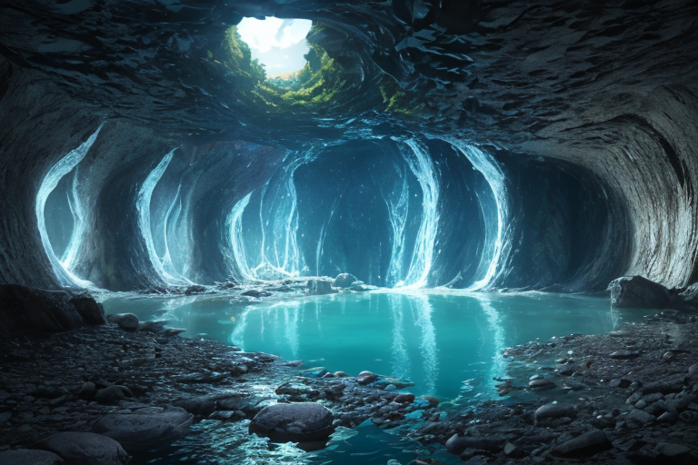
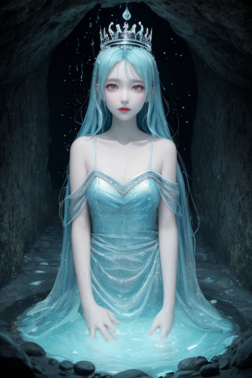
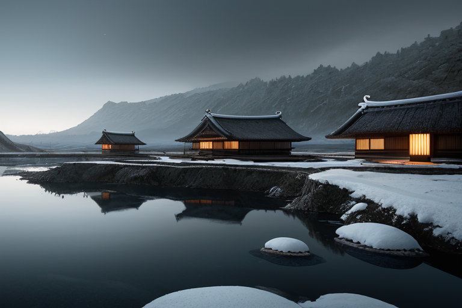
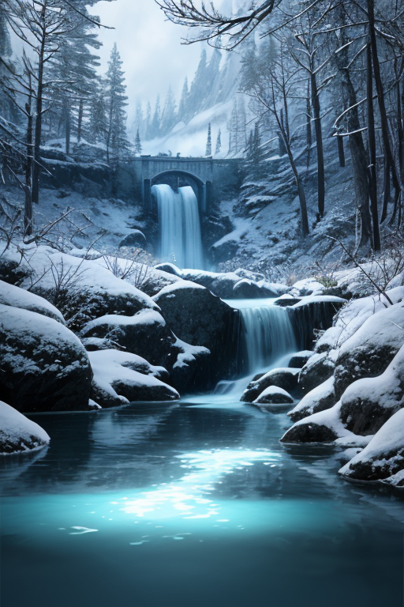
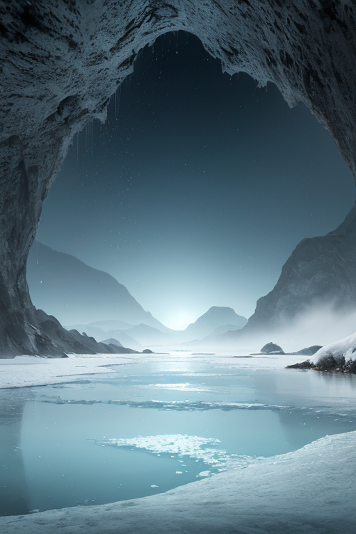

第一章 現実の富山
あなたはまだ気づいていない。この土地にも、王がいることを。
黒部ダムの巨大なコンクリート壁は、山肌を切り裂き、膨大な水を湛えている。観光客の歓声が響くその直下で、水脈は深く、静かに眠っている。立山連峰の万年雪は、時間をかけて溶け、地中に染み込み、無数の水路を形成する。富山は、水に形を与え、水に生かされ、時に水に脅かされる土地だ。
その水脈の要に、彼はいる。トヤマリア・アクア。透明な水のように、誰の目にも映らない王。その役目は「封印」である。歪みの列島を流れる過剰なエネルギーを、この地の深層水脈に封じ込め、均衡を保つこと。彼は感情を持たない、純粋な調整装置として、千年以上、ただそれを繰り返してきた。
富山湾の深層は、世界有数の透明度を誇る。彼の王国「トヤマリア・アクア」もまた、それと同じく透明で、静謐だ。しかし、透明であることは、見えないという孤独を意味した。強さなのか、それとも――。王は、自らに問いかけることさえ、長らく忘れていた。

第二章 歪みの兆候
黒部ダムの巨大なコンクリート壁の内部、水脈の最深部で、トヤマリア・アクアは微かな振動を感知した。列島の歪みを封じ込める結界に、目に見えない亀裂が走り始めている。それは、彼の透明な身体を通り抜ける、鈍い疼きのようなものだった。
主席妖精アクエリスが、水の流れのように滑らかな声で報告する。「立山連峰の雪解け水に、予定外の濁りが確認されました。水源保護を司るタテヤミアも、雪壁の内部で異質な圧力を感知しています」
王は何も答えなかった。答える必要がなかった。彼の役割は、この兆候を分析し、微調整することだけだ。五箇山の合掌造りが何百年も風雪に耐えてきたように、彼もまた、封じた力を封じたまま保たねばならない。透明であること――それは感情に流されず、ただ存在し続けること。それが強さだと、彼は信じてきた。
しかし、富山湾の深層を漂うホタルイカの青白い光が、ふと、彼の心の奥底で揺らめいた。この揺らぎは、単なる歪みの増大なのか。それとも、長く封じられてきた何かが、目覚めようとする胎動なのか。彼には、まだ判別できなかった。

第三章 王の葛藤
黒部ダムの巨大なコンクリート壁は、彼の心の鏡だった。封じ込め、制御し、透明な均衡を保つ。それが彼の役目であり、強さの証明だと、トヤマリア・アクアは繰り返し自分に言い聞かせてきた。立山連峰の雪解け水は、ダム湖で一旦静まり、計画的に解放される。感情もまた、そうあるべきだ。北前船が富山湾を行き交ったように、彼の内側で沸き起こる「何か」も、交易せず、封じたままでよい。
しかし、五箇山の合掌造りを見下ろす時、彼は疑う。あの傾斜した屋根は、雪という重圧に「抵抗」する形だ。受け流すだけでなく、形を変えて支える。自分はただ封じているだけではないか。ホタルイカの無数の光が、深淵で意思を持って明滅するように、封じた水源の底から、微かな「圧」が伝わってくる。それは歪みの調整を超えた、意思の萌芽だった。
透明であることは、無であることか。彼は雨晴海岸に立ち、水平線を見つめた。海はすべてを映すが、その底は見えない。強さとは、封じる透明さか。それとも、封じたものを自ら見つめ、引き受ける覚悟か。答えは、まだ水のように、彼の掌から零れ落ちる。

第四章 妖精との対話
黒部ダムの巨大なコンクリート壁の内部、水脈の妖精アクエリスは、王の前に透明な姿を現した。その声は、ダム湖の底を流れる水の音そのものだった。
「我々は封じました。この山の怒りを、この豊かな水を。それは強さの証でした」
立山連峰の雪解け水は、かつて暴れ川となり、平野を脅かした。人々は畏れ、そして信仰で向き合い、やがて巨大な構造物で制御した。透明王の力は、その「封じる」意思と共鳴し、水源を静謐な均衡へと導いてきた。
「しかし、王よ」アクエリスは続けた。「封じたものは、消えはしません。ダムの底で、山の記憶は脈打っています。透明であることは、それを無視することではない。封じられた力の重さを、常に映し、引き受け続けることです」
雪壁の妖精タテヤミアが、合掌造りの屋根に積もる雪のように静かに加わる。「透明は脆さではありません。すべての圧力を見据え、なお形を保つこと。それが、この土地が教える強さです」
王は、掌に零れる黒部の水を見つめた。水は何も隠さない。その透明さこそが、すべての重みを映し出す器であった。

第五章 微調整と余韻
黒部ダムの巨大な壁面に、王は掌を押し当てた。深く眠る水脈の鼓動が、冷たい石を通して伝わってくる。歪みは収まったが、封印の亀裂は完全には塞がれていない。微かな振動が、今も地底を伝っている。
「すべてを元通りにはできません」と王は呟いた。アクエリスが、彼の周りに微かな水の輪を描く。「ですが、流れをほんの少し、遅らせることはできます」
王は目を閉じた。立山連峰の雪解け水が地中を流れる速度を、ほんの百分の一秒だけ遅くする。富山湾に注ぐ河口の角度を、肉眼では識別できないほど微調整する。それは、津波の第一波が海岸に到達する時間を、ほんの数秒、遅延させるための、透明な工作だ。誰にも気付かれない。記録にも残らない。ただ、その数秒が、逃げ遅れた一つの命を、偶然にも救うかもしれない。
代償として、王の身体の一部が、より一層、透明になっていく。感情のざわめきが、水のように澄み、やがて静寂に近づいていく。彼はそれを受け入れた。透明であることの強さとは、自らが器となり、すべての重みを映し、引き受けること。真実を隠さず、それでもなお、形を保ち続けること。
雨晴海岸から望む立山は、朝もやに霞んでいた。海は穏やかで、ホタルイカの季節が終わったことを告げている。何も起こらなかったように、日常は流れていく。
あなたの町にも、王がいる。